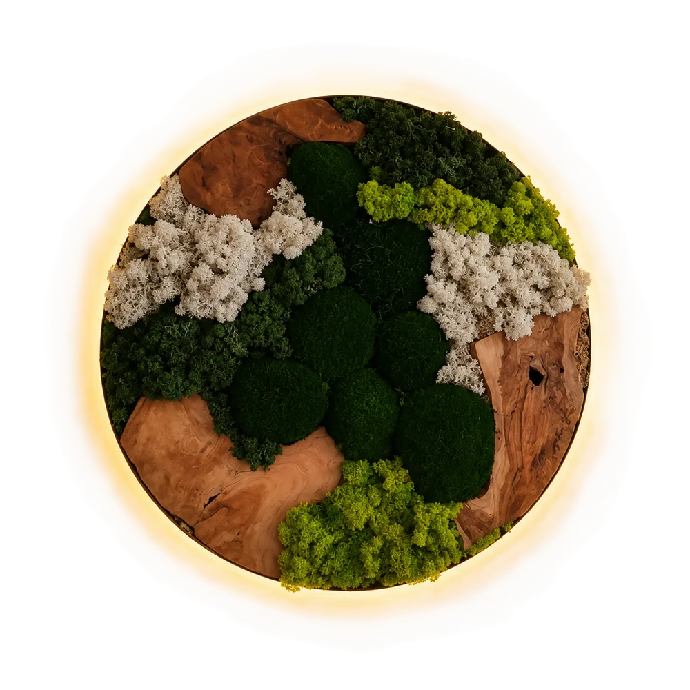

Atelier · Eersel · Nº 01 — 10
Natuur die je niet hoeft te verzorgen
Schilderijen en composities van gepreserveerd mos. Geen water, geen zonlicht nodig. Blijft jarenlang mooi. Elk stuk is uniek en wordt op maat gemaakt.
Nº 02 / 10 · Bolmos, rendiermos, hout · Ø 70 cm · Eersel
-
Onderhoudsvrij
Geen water, geen zonlicht nodig. Ophangen en klaar.
-
Gepreserveerd mos
Het mos is behandeld en behoudt jarenlang zijn kleur.
-
Uniek & handgemaakt
Elk stuk wordt met de hand gemaakt. Er is er maar één van.
-
Op maat
Vorm, kleur en formaat naar jouw wens. Ook zakelijk: een logo in mos.
De verzameling
Collectie van tien werken
Elk stuk uit het atelier kan opnieuw gemaakt worden.
Geen werken in deze categorie, maar alles kan op maat. Stel jouw stuk samen.
Configurator
Stel jouw stuk samen — zie het meteen
Kies een startpunt of begin blanco. Je ziet live een schets, het etiket en een prijsindicatie. Aan het eind stuur je je samenstelling op, de definitieve prijs bevestigen we samen.
Startpunt — kies een bestaand werk als basis
Van wens tot werk
Werkwijze in vier stappen
-
Jouw idee of wens
Een vorm, een kleur, een formaat, of een logo voor op kantoor.
-
Ontwerp en materiaal
Samen bepalen we het mos, het hout, de rand en of er verlichting in komt.
-
Met de hand gemaakt in Eersel
Elk stuk wordt stuk voor stuk opgebouwd. Er is er maar één van.
-
Opgehaald of bezorgd
Ophalen in Eersel of bezorgen, wat jou het beste uitkomt.
Het atelier
Over de maker
Elk werk komt uit een klein atelier in Eersel. Daar wordt gepreserveerd rendiermos en bolmos met de hand gecombineerd met acaciahout, natuurlijke elementen en soms verlichting.
Eersel · ophalen of verzenden
Contact — vertel je wens
Vragen, een wens of een foto van je muur? Stuur een bericht — je krijgt persoonlijk antwoord van de maker.
Liever direct?
Gevestigd in Eersel (Noord-Brabant). Werken kunnen opgehaald of bezorgd/verzonden worden.